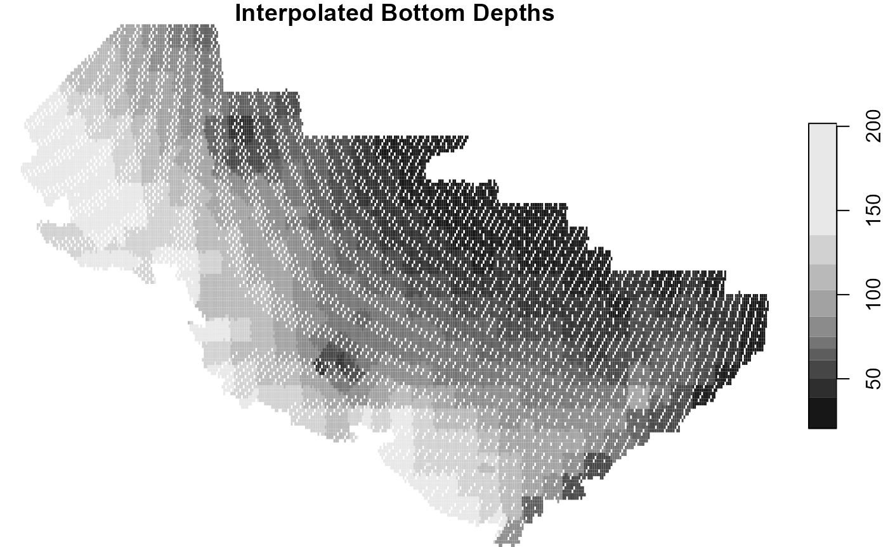
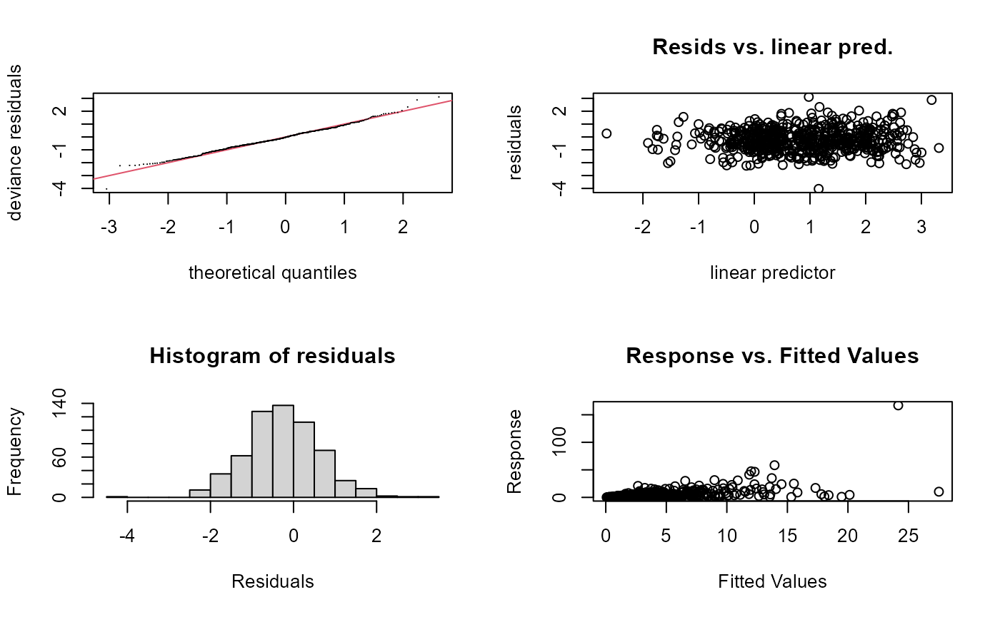
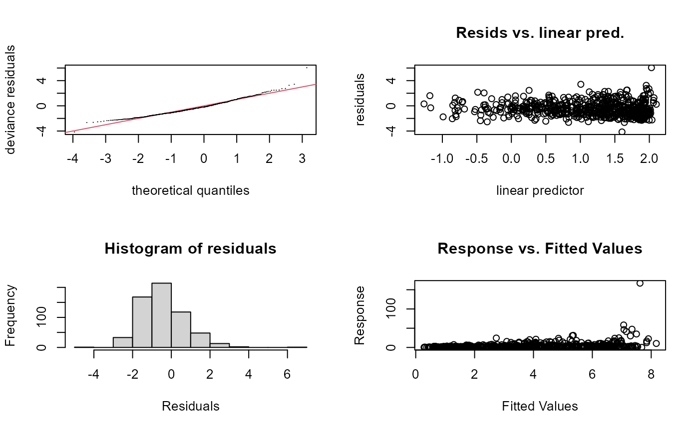
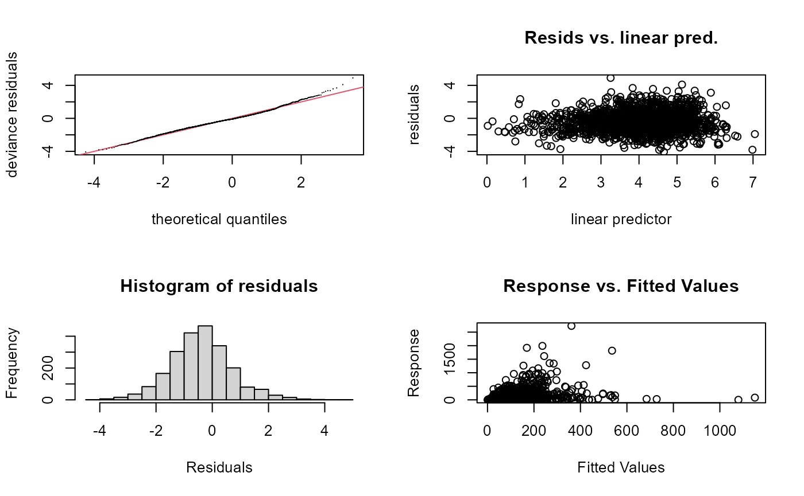
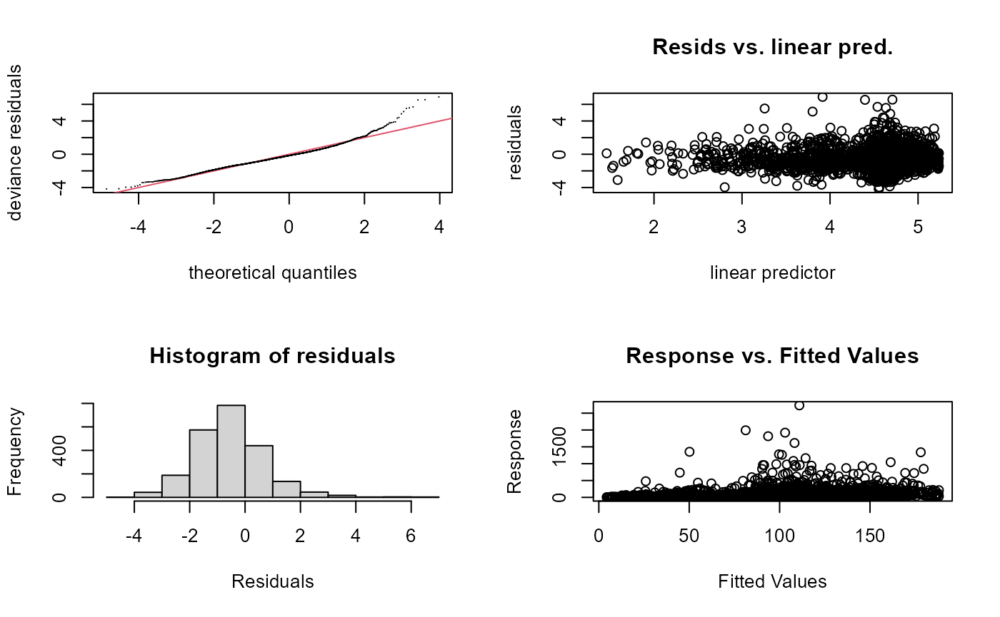
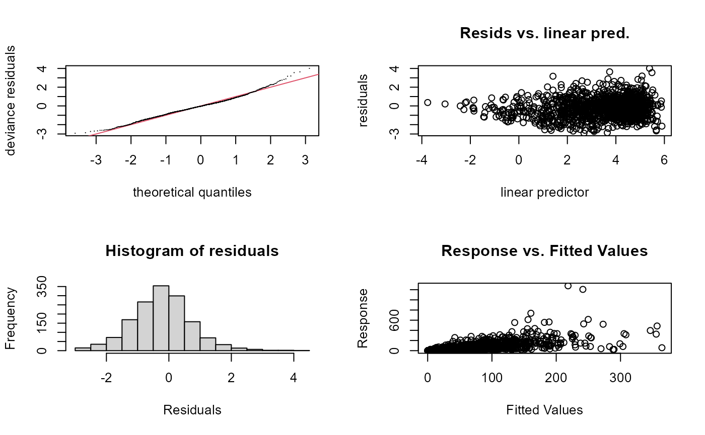
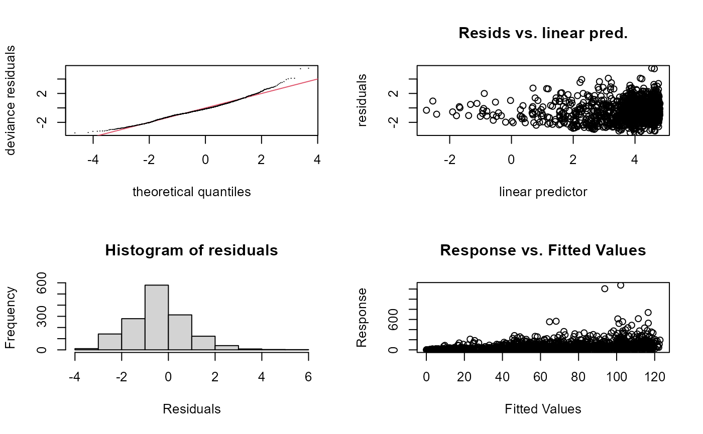
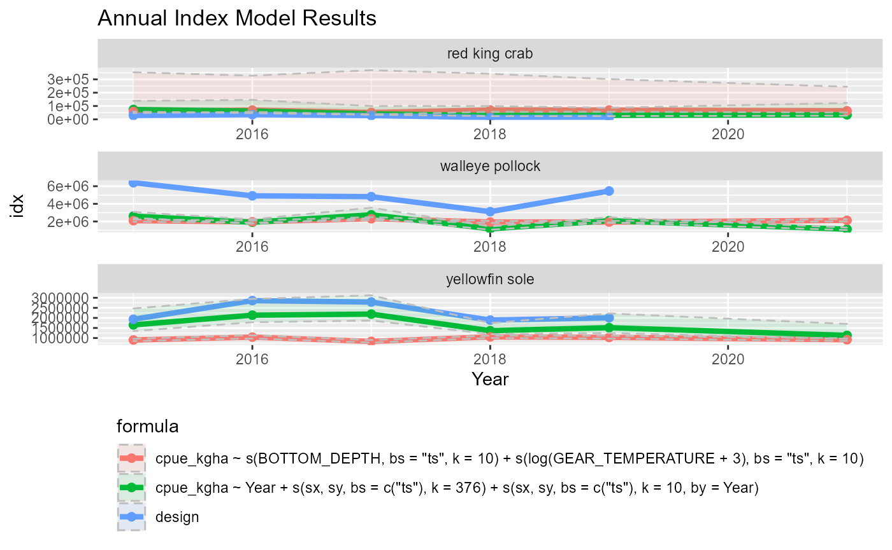

Simple {surveyIndex} example
September 13 2022
A-data-prep.RmdExample set up and context:
For this example, let’s say we want to assess:

Yellowfin Sole is a commonly caught “golden child” species has been realitively easy to model and assess because of it’s high abundance, large distribution over the survey area, and consistent availability to the survey.

Walleye pollock are also common to the survey, but their distribution and availability to the survey are driven by density-dependence and temperature and the cold pool extent. Including covariates in model fits could help uncover structure that could help us better understand this specie’s abundance.

Red King Crab is a “problem child” will have patchier and less understood availability to the survey.

Survey grid for the eastern and northern Bering sea bottom trawl surveys.
In this example, we will use data from NOAA Fisheries’ eastern Bering sea (EBS) bottom trawl survey. The Resource Assessment and Conservation Engineering (RACE) Division Groundfish Assessment Program (GAP) of the Alaska Fisheries Science Center (AFSC) conducts fisheries-independent bottom trawl surveys to assess the populations of demersal fish and crab stocks of Alaska. Data presented here are presence-only (non-zero) observations from those surveys and therefore CANNOT be aggregated.
For the sake of a simple example, we will only assess data from 2015 to 2021.
SPECIES <- c("yellowfin sole", "walleye pollock", "red king crab")
YEARS <- 2015:2021
SRVY <- "EBS"1. What data area we using?
Here, we use the public facing data from the NOAA AFSC groundfish Bering sea bottom trawl survey. For more information about how these data were compiled, see afsc-gap-products GitHub repo.
dat <- surveyIndex::noaa_afsc_public_foss %>%
dplyr::filter(srvy == SRVY &
year %in% YEARS &
common_name %in% SPECIES) %>%
dplyr::mutate(hauljoin = paste0(stratum, "_", station, "_", date_time)) %>%
dplyr::select(
year, date_time, latitude_dd, longitude_dd, # spatiotemproal data
cpue_kgha, common_name, # catch data
bottom_temperature_c, depth_m, # possible covariate data
srvy, area_swept_ha, duration_hr, vessel_id, hauljoin # haul/effort data)
)
head(dat)
#> # A tibble: 6 × 13
#> year date_time latit…¹ longi…² cpue_…³ commo…⁴ botto…⁵ depth_m srvy area_…⁶
#> <dbl> <chr> <dbl> <dbl> <dbl> <chr> <dbl> <dbl> <chr> <dbl>
#> 1 2016 05/31/201… 56.3 -161. 1.14 red ki… 6.1 54 EBS 5.17
#> 2 2016 05/31/201… 56.3 -161. 240. walley… 6.1 54 EBS 5.17
#> 3 2016 05/31/201… 56.3 -161. 326. yellow… 6.1 54 EBS 5.17
#> 4 2016 05/31/201… 56.0 -162. 3.98 red ki… 5.2 73 EBS 5.12
#> 5 2016 05/31/201… 56.0 -162. 61.2 walley… 5.2 73 EBS 5.12
#> 6 2016 05/31/201… 56.0 -162. 150. yellow… 5.2 73 EBS 5.12
#> # … with 3 more variables: duration_hr <dbl>, vessel_id <dbl>, hauljoin <chr>,
#> # and abbreviated variable names ¹latitude_dd, ²longitude_dd, ³cpue_kgha,
#> # ⁴common_name, ⁵bottom_temperature_c, ⁶area_swept_ha2. Prepare the data for surveyIndex::get_surveyidx():
# project spatial data
crs_proj <- "EPSG:3338" # NAD83 / Alaska Albers
crs_latlon <- "+proj=longlat +datum=WGS84" # decimal degrees
ll <- surveyIndex::convert_crs(
x = dat$longitude_dd,
y = dat$latitude_dd,
crs_in = crs_latlon,
crs_out = crs_proj)
YEARS <- sort(unique(dat$year))
# The surveyIndex::get_surveyidx() expects some columns to be named in a specific way
dat_wrangled <- dat %>%
dplyr::rename(
Year = year,
wCPUE = cpue_kgha,
COMMON_NAME = common_name,
GEAR_TEMPERATURE = bottom_temperature_c,
BOTTOM_DEPTH = depth_m,
HaulDur = duration_hr,
EFFORT = area_swept_ha,
Ship = vessel_id) %>%
dplyr::mutate(
# create some other vars
Lon = longitude_dd,
Lat = latitude_dd,
lon = ll$X,
lat = ll$Y,
sx = ((longitude_dd - mean(longitude_dd, na.rm = TRUE))/1000),
sy = ((latitude_dd - mean(latitude_dd, na.rm = TRUE))/1000),
ctime = as.numeric(as.character(Year)),
date_time = as.Date(x = date_time, format = "%m/%d/%Y %H:%M:%S"),
hour = as.numeric(format(date_time,"%H")),
minute = as.numeric(format(date_time,"%M")),
day = as.numeric(format(date_time,"%d")),
month = as.numeric(format(date_time,"%m")),
TimeShotHour = hour + minute/60,
timeOfYear = (month - 1) * 1/12 + (day - 1)/365,
# add some dummy vars and create some other vars
Country = "USA",
Gear = "dummy",
Quarter = "2") %>%
dplyr::mutate(across((c("Year", "Ship", "COMMON_NAME")), as.factor)) %>%
dplyr::select(wCPUE, GEAR_TEMPERATURE, BOTTOM_DEPTH, COMMON_NAME, EFFORT,
Year, Ship, Lon, Lat, lat, lon, sx, sy,
ctime, TimeShotHour, timeOfYear, Gear, Quarter, HaulDur, hauljoin)
head(dat_wrangled)
#> # A tibble: 6 × 20
#> wCPUE GEAR_TE…¹ BOTTO…² COMMO…³ EFFORT Year Ship Lon Lat lat lon
#> <dbl> <dbl> <dbl> <fct> <dbl> <fct> <fct> <dbl> <dbl> <dbl> <dbl>
#> 1 1.14 6.1 54 red ki… 5.17 2016 94 -161. 56.3 7.26e5 -4.32e5
#> 2 240. 6.1 54 walley… 5.17 2016 94 -161. 56.3 7.26e5 -4.32e5
#> 3 326. 6.1 54 yellow… 5.17 2016 94 -161. 56.3 7.26e5 -4.32e5
#> 4 3.98 5.2 73 red ki… 5.12 2016 162 -162. 56.0 6.98e5 -5.16e5
#> 5 61.2 5.2 73 walley… 5.12 2016 162 -162. 56.0 6.98e5 -5.16e5
#> 6 150. 5.2 73 yellow… 5.12 2016 162 -162. 56.0 6.98e5 -5.16e5
#> # … with 9 more variables: sx <dbl>, sy <dbl>, ctime <dbl>, TimeShotHour <dbl>,
#> # timeOfYear <dbl>, Gear <chr>, Quarter <chr>, HaulDur <dbl>, hauljoin <chr>,
#> # and abbreviated variable names ¹GEAR_TEMPERATURE, ²BOTTOM_DEPTH,
#> # ³COMMON_NAME3. Define representitive station points to fit and predict the model at
Since surveys are not done at the same exact location each year (it’s the intention, but impossible in practice), we need to define what representative latitudes and longitudes we are going to predict at.
These are the same prediction grids AFSC uses for their 2021 VAST model-based indices (which is subject to change - do not use this without asking/checking that this is still current!).
pred_grid <- surveyIndex::pred_grid_ebs
ll <- surveyIndex::convert_crs(
x = pred_grid$lon,
y = pred_grid$lat,
crs_in = crs_latlon,
crs_out = crs_proj)
pred_grid <- pred_grid %>%
dplyr::mutate(
lon = ll$X,
lat = ll$Y,
sx = ((lon - mean(lon, na.rm = TRUE))/1000),
sy = ((lat - mean(lat, na.rm = TRUE))/1000))
head(pred_grid)
#> # A tibble: 6 × 5
#> lon lat Shape_Area sx sy
#> <dbl> <dbl> <dbl> <dbl> <dbl>
#> 1 -1133214. 1542340. 2449160. -290. 517.
#> 2 -1129510. 1542340. 9298535. -287. 517.
#> 3 -1125806. 1542340. 9749166. -283. 517.
#> 4 -1122102. 1542340. 5383834. -279. 517.
#> 5 -1118398. 1542340. 1173734. -275. 517.
#> 6 -1140622. 1538636. 1525663. -298. 513.4. Prepare covariate data
Here we want to match covariate data to the prediction grid.
dat_cov <- surveyIndex::pred_grid_ebs %>%
dplyr::select(-Shape_Area) %>%
dplyr::mutate(
sx = ((lon - mean(lon, na.rm = TRUE))/1000),
sy = ((lat - mean(lat, na.rm = TRUE))/1000))
sp_extrap_raster <- SpatialPoints(
coords = coordinates(as.matrix(dat_cov[,c("lon", "lat")])),
proj4string = CRS(crs_latlon) )4a. Data that varies over only space (depth)
Here in the Bering sea, the depth rarely changes. The modeler may consider making this variable time-varying as well if they are say, in the Gulf of Alaska or the Aleutian Islands where currents and island formation can markedly change depth.
For this, we are going to create a raster of depth in the Bering sea from the survey data so we can merge that into the dataset at the prediction grid lat/lons.
x <- dat_wrangled %>%
dplyr::select(Lon, Lat, BOTTOM_DEPTH) %>%
stats::na.omit() %>%
sf::st_as_sf(x = .,
coords = c(x = "Lon", y = "Lat"),
crs = sf::st_crs(crs_latlon))
idw_fit <- gstat::gstat(formula = BOTTOM_DEPTH ~ 1,
locations = x,
nmax = 4)
# stn_predict <- raster::predict(idw_fit, x)
extrap_data0 <- raster::predict(
idw_fit, sp_extrap_raster) %>%
# as(sp_extrap_raster, Class = "SpatialPoints")) %>%
sf::st_as_sf() %>%
sf::st_transform(crs = crs_latlon) %>%
stars::st_rasterize()
extrap_data <- stars::st_extract(x = extrap_data0,
at = as.matrix(dat_cov[,c("lon", "lat")]))
# to make future runs of this faster:
save(extrap_data0, extrap_data,
file = paste0("../inst/VigA_bottom_depth_raster_",
min(YEARS),"-",max(YEARS), ".rdata"))
# Just so we can see what we are looking at:
plot(extrap_data0, main = "Interpolated Bottom Depths") 
dat_cov <- cbind.data.frame(dat_cov,
"BOTTOM_DEPTH" = extrap_data$var1.pred) %>%
stats::na.omit()
head(dat_cov)
#> lon lat sx sy BOTTOM_DEPTH
#> 1 -176.2068 62.13518 -0.007481089 0.003842524 92.30228
#> 2 -176.1395 62.14603 -0.007413772 0.003853379 92.28437
#> 3 -176.0722 62.15686 -0.007346407 0.003864203 92.27470
#> 4 -176.0047 62.16765 -0.007278995 0.003874995 91.78201
#> 5 -175.9373 62.17841 -0.007211535 0.003885756 91.50777
#> 6 -176.3179 62.08210 -0.007592106 0.003789448 92.302354b. Data that varies over space and time (bottom temperature)
Here, bottom temperature, and thereby the cold pool extent, have been show to drive the distribution of many species. This is especially true for walleye pollock.
For this we are going to lean on our in-house prepared validated and pre-prepared {coldpool} R package (S. Rohan, L. Barnett, and N. Charriere). This data interpolates over the whole area of the survey so there are no missing data.
plot(coldpool::ebs_bottom_temperature[[1]]) # Just so we can see what we are looking at: 
tmp <- c()
for (i in 1:length(YEARS)) {
tmp <- c(tmp,
grep(pattern = YEARS[i], x = names(coldpool::ebs_bottom_temperature)))
}
extrap_data0 <- coldpool::ebs_bottom_temperature[[tmp]] %>%
as(., Class = "SpatialPointsDataFrame") %>%
sf::st_as_sf() %>%
sf::st_transform(crs = crs_latlon) %>%
stars::st_rasterize() %>%
stars::st_extract(x = .,
at = as.matrix(dat_cov[,c("lon", "lat")]))
names(extrap_data0) <- paste0("GEAR_TEMPERATURE", YEARS)
dat_cov <- dplyr::bind_cols(dat_cov, extrap_data0) %>%
na.omit()
head(dat_cov)
#> lon lat sx sy BOTTOM_DEPTH
#> 7 -176.2507 62.09301 -0.007524943 0.003800355 92.30377
#> 11 -175.9816 62.13632 -0.007255819 0.003843669 91.79176
#> 12 -175.9142 62.14707 -0.007188420 0.003854419 91.50379
#> 18 -176.2944 62.05083 -0.007568678 0.003758174 92.31231
#> 20 -176.1602 62.07259 -0.007434424 0.003779935 92.31936
#> 22 -176.0257 62.09423 -0.007299981 0.003801570 92.29796
#> GEAR_TEMPERATURE2015 GEAR_TEMPERATURE2016 GEAR_TEMPERATURE2017
#> 7 0.06603578 -0.08488923 0.42137590
#> 11 -0.19408995 -0.40033633 0.13686910
#> 12 -0.27335623 -0.50372183 0.01403086
#> 18 0.13692820 0.04827412 0.49719471
#> 20 -0.02377643 -0.18901448 0.33807641
#> 22 -0.11071504 -0.29478970 0.24448346
#> GEAR_TEMPERATURE2018 GEAR_TEMPERATURE2019 GEAR_TEMPERATURE2021
#> 7 2.109732 1.372879 0.30572507
#> 11 2.041945 1.190976 0.12316012
#> 12 2.020781 1.117297 0.06606124
#> 18 2.136764 1.444568 0.39687258
#> 20 2.087453 1.317465 0.24463494
#> 22 2.064520 1.257273 0.183228885. DATRAS structure
5b. Catch Data
Now, we need to fill in the data with the zeros!
# Identify vars that will be used --------------------------------------------
varsbyyr <- unique( # c("GEAR_TEMPERATURE", "cpi")
gsub(pattern = "[0-9]+",
replacement = "",
x = names(dat_cov)[grepl(names(dat_cov),
pattern = "[0-9]+")]))
vars <- unique( # c("BOTTOM_DEPTH")
names(dat_cov)[!grepl(names(dat_cov),
pattern = "[0-9]+")])
vars <- vars[!(vars %in% c("LONG", "LAT", "lon", "lat", "sx", "sy"))]
## Fill catch data with zeros ---------------------------------------------------------
data_hauls <- dat_wrangled %>%
dplyr::select(Year, sx, sy,
dplyr::all_of(varsbyyr), dplyr::all_of(vars),
Ship, hauljoin,
lat, lon, Lat, Lon,
ctime, TimeShotHour, timeOfYear, Gear, Quarter,
EFFORT, HaulDur) %>%
# dplyr::filter(!is.na(GEAR_TEMPERATURE)) %>%
na.omit() %>%
dplyr::distinct()
data_catch <- dat_wrangled %>%
dplyr::select(COMMON_NAME, wCPUE, hauljoin)
dat_catch_haul <- dplyr::left_join(x = data_hauls,
y = data_catch,
by = c("hauljoin")) %>%
dplyr::mutate(wCPUE = ifelse(is.na(wCPUE), 0, wCPUE))
head(dat_catch_haul)
#> # A tibble: 6 × 20
#> Year sx sy GEAR_TEMPE…¹ BOTTO…² Ship haulj…³ lat lon Lat
#> <fct> <dbl> <dbl> <dbl> <dbl> <fct> <chr> <dbl> <dbl> <dbl>
#> 1 2016 0.00647 -0.00183 6.1 54 94 10_E-1… 7.26e5 -4.32e5 56.3
#> 2 2016 0.00647 -0.00183 6.1 54 94 10_E-1… 7.26e5 -4.32e5 56.3
#> 3 2016 0.00647 -0.00183 6.1 54 94 10_E-1… 7.26e5 -4.32e5 56.3
#> 4 2016 0.00518 -0.00217 5.2 73 162 31_D-1… 6.98e5 -5.16e5 56.0
#> 5 2016 0.00518 -0.00217 5.2 73 162 31_D-1… 6.98e5 -5.16e5 56.0
#> 6 2016 0.00518 -0.00217 5.2 73 162 31_D-1… 6.98e5 -5.16e5 56.0
#> # … with 10 more variables: Lon <dbl>, ctime <dbl>, TimeShotHour <dbl>,
#> # timeOfYear <dbl>, Gear <chr>, Quarter <chr>, EFFORT <dbl>, HaulDur <dbl>,
#> # COMMON_NAME <fct>, wCPUE <dbl>, and abbreviated variable names
#> # ¹GEAR_TEMPERATURE, ²BOTTOM_DEPTH, ³hauljoin
allpd <- lapply(YEARS, FUN = surveyIndex::get_prediction_grid, x = dat_cov,
vars = vars, varsbyyr = varsbyyr)
names(allpd) <- as.character(YEARS)
head(allpd[1][[1]])
#> lon lat sx sy BOTTOM_DEPTH GEAR_TEMPERATURE
#> 7 -176.2507 62.09301 -0.007524943 0.003800355 92.30377 0.06603578
#> 11 -175.9816 62.13632 -0.007255819 0.003843669 91.79176 -0.19408995
#> 12 -175.9142 62.14707 -0.007188420 0.003854419 91.50379 -0.27335623
#> 18 -176.2944 62.05083 -0.007568678 0.003758174 92.31231 0.13692820
#> 20 -176.1602 62.07259 -0.007434424 0.003779935 92.31936 -0.02377643
#> 22 -176.0257 62.09423 -0.007299981 0.003801570 92.29796 -0.11071504
#> EFFORT
#> 7 1
#> 11 1
#> 12 1
#> 18 1
#> 20 1
#> 22 15a. Covariate Data
## split data by species, make into DATRASraw + Nage matrix
ds <- split(dat_catch_haul,dat_catch_haul$COMMON_NAME)
ds <- lapply(ds, surveyIndex::get_datrasraw)
## OBS, response is added here in "Nage" matrix -- use wCPUE
ds <- lapply(ds,function(x) { x[[2]]$Nage <- matrix(x$wCPUE,ncol=1); colnames(x[[2]]$Nage)<-1; x } )
ds
#> $`red king crab`
#> Object of class 'DATRASraw'
#> ===========================
#> Number of hauls: 598
#> Number of species: 0
#> Number of countries: 0
#> Years: 2015 2016 2017 2018 2019 2021
#> Quarters:
#> Gears:
#> Haul duration: 0.266 - 0.609 minutes
#>
#> $`walleye pollock`
#> Object of class 'DATRASraw'
#> ===========================
#> Number of hauls: 2238
#> Number of species: 0
#> Number of countries: 0
#> Years: 2015 2016 2017 2018 2019 2021
#> Quarters:
#> Gears:
#> Haul duration: 0.206 - 0.609 minutes
#>
#> $`yellowfin sole`
#> Object of class 'DATRASraw'
#> ===========================
#> Number of hauls: 1497
#> Number of species: 0
#> Number of countries: 0
#> Years: 2015 2016 2017 2018 2019 2021
#> Quarters:
#> Gears:
#> Haul duration: 0.206 - 0.609 minutes6. Formulas
fm <- list(
# Null model spatial and temporal with an additional year effect
"fm_1_s_t_st" = "Year +
s(sx,sy,bs=c('ts'),k=376) +
s(sx,sy,bs=c('ts'),k=10,by=Year)",
# Mdoel with simple covariates
"fm_2_cov" =
"s(BOTTOM_DEPTH,bs='ts',k=10) +
s(log(GEAR_TEMPERATURE+3),bs='ts',k=10)"
)7. Fit the Model
Here are all of the models we want to try fitting:
comb <- tidyr::crossing(
"SPECIES" = SPECIES,
"fm_name" = gsub(pattern = " ", replacement = "_", x = names(fm))) %>%
dplyr::left_join(
x = .,
y = data.frame("fm" = gsub(pattern = "\n", replacement = "",
x = unlist(fm), fixed = TRUE),
"fm_name" = gsub(pattern = " ", replacement = "_",
x = names(fm))),
by = "fm_name")
comb
#> # A tibble: 6 × 3
#> SPECIES fm_name fm
#> <chr> <chr> <chr>
#> 1 red king crab fm_1_s_t_st Year + s(sx,sy,bs=c('ts'),k=376) + s(sx,sy…
#> 2 red king crab fm_2_cov s(BOTTOM_DEPTH,bs='ts',k=10) +s(log(GEAR_TEMPERAT…
#> 3 walleye pollock fm_1_s_t_st Year + s(sx,sy,bs=c('ts'),k=376) + s(sx,sy…
#> 4 walleye pollock fm_2_cov s(BOTTOM_DEPTH,bs='ts',k=10) +s(log(GEAR_TEMPERAT…
#> 5 yellowfin sole fm_1_s_t_st Year + s(sx,sy,bs=c('ts'),k=376) + s(sx,sy…
#> 6 yellowfin sole fm_2_cov s(BOTTOM_DEPTH,bs='ts',k=10) +s(log(GEAR_TEMPERAT…
models <- fittimes <- list()
for(i in 1:nrow(comb)){
cat("Fitting ",comb$SPECIES[i],"\n", comb$fm_name[i], ": ", comb$fm[i], "\n")
temp <- paste0(comb$SPECIES[i], " ", comb$fm_name[i])
fittimes[[ temp ]] <-
system.time ( models[[ temp ]] <-
surveyIndex::get_surveyidx(
x = ds[[ comb$SPECIES[i] ]],
ages = 1,
myids = NULL,
predD = allpd,
cutOff = 0,
fam = "Tweedie",
modelP = comb$fm[i],
gamma = 1,
control = list(trace = TRUE,
maxit = 20)) )
}
save(models, fittimes, file = paste0("../inst/VigA_model_fits.Rdata"))
## Check basis dimensions splines (spatial resolution)
# sink(paste0(".", dir_out, "gamcheck.txt"))
par(mfrow = c(2,2))
lapply(models,function(x) gam.check(x$pModels[[1]]))
#>
#> Method: ML Optimizer: outer newton
#> full convergence after 15 iterations.
#> Gradient range [-0.0006762137,9.344329e-05]
#> (score 1166.64 & scale 0.7951414).
#> Hessian positive definite, eigenvalue range [1.138134e-05,373.6608].
#> Model rank = 435 / 435
#>
#> Basis dimension (k) checking results. Low p-value (k-index<1) may
#> indicate that k is too low, especially if edf is close to k'.
#>
#> k' edf k-index p-value
#> s(sx,sy) 3.75e+02 5.57e+01 1.02 1
#> s(sx,sy):Year2015 9.00e+00 1.89e+00 1.02 1
#> s(sx,sy):Year2016 9.00e+00 1.81e+00 1.02 1
#> s(sx,sy):Year2017 9.00e+00 1.09e+00 1.02 1
#> s(sx,sy):Year2018 9.00e+00 3.69e-05 1.02 1
#> s(sx,sy):Year2019 9.00e+00 3.57e-05 1.02 1
#> s(sx,sy):Year2021 9.00e+00 6.51e-01 1.02 1
#>
#> Method: ML Optimizer: outer newton
#> full convergence after 14 iterations.
#> Gradient range [-0.0006031624,4.562128e-06]
#> (score 1282.403 & scale 1.234582).
#> Hessian positive definite, eigenvalue range [0.0005522579,402.3254].
#> Model rank = 19 / 19
#>
#> Basis dimension (k) checking results. Low p-value (k-index<1) may
#> indicate that k is too low, especially if edf is close to k'.
#>
#> k' edf k-index p-value
#> s(BOTTOM_DEPTH) 9.000 4.388 0.76 <2e-16 ***
#> s(log(GEAR_TEMPERATURE + 3)) 9.000 0.944 0.77 0.01 **
#> ---
#> Signif. codes: 0 '***' 0.001 '**' 0.01 '*' 0.05 '.' 0.1 ' ' 1
#>
#> Method: ML Optimizer: outer newton
#> full convergence after 18 iterations.
#> Gradient range [-0.01277983,0.0005051565]
#> (score 11803.57 & scale 1.204289).
#> Hessian positive definite, eigenvalue range [0.0003227355,1492.377].
#> Model rank = 435 / 435
#>
#> Basis dimension (k) checking results. Low p-value (k-index<1) may
#> indicate that k is too low, especially if edf is close to k'.
#>
#> k' edf k-index p-value
#> s(sx,sy) 3.75e+02 1.26e+02 0.87 0.11
#> s(sx,sy):Year2015 9.00e+00 6.23e+00 0.87 0.14
#> s(sx,sy):Year2016 9.00e+00 1.29e-02 0.87 0.16
#> s(sx,sy):Year2017 9.00e+00 1.94e+00 0.87 0.14
#> s(sx,sy):Year2018 9.00e+00 8.12e+00 0.87 0.13
#> s(sx,sy):Year2019 9.00e+00 2.01e+00 0.87 0.11
#> s(sx,sy):Year2021 9.00e+00 6.41e-03 0.87 0.17
#>
#> Method: ML Optimizer: outer newton
#> full convergence after 16 iterations.
#> Gradient range [-0.02933839,3.957573e-05]
#> (score 12048.47 & scale 1.565443).
#> Hessian positive definite, eigenvalue range [0.002046042,1566.539].
#> Model rank = 19 / 19
#>
#> Basis dimension (k) checking results. Low p-value (k-index<1) may
#> indicate that k is too low, especially if edf is close to k'.
#>
#> k' edf k-index p-value
#> s(BOTTOM_DEPTH) 9.00 5.70 0.77 <2e-16 ***
#> s(log(GEAR_TEMPERATURE + 3)) 9.00 5.56 0.73 <2e-16 ***
#> ---
#> Signif. codes: 0 '***' 0.001 '**' 0.01 '*' 0.05 '.' 0.1 ' ' 1
#>
#> Method: ML Optimizer: outer newton
#> full convergence after 18 iterations.
#> Gradient range [-0.0001287914,0.0001470902]
#> (score 6877.784 & scale 0.9312515).
#> eigenvalue range [-0.0001454451,1033.582].
#> Model rank = 435 / 435
#>
#> Basis dimension (k) checking results. Low p-value (k-index<1) may
#> indicate that k is too low, especially if edf is close to k'.
#>
#> k' edf k-index p-value
#> s(sx,sy) 3.75e+02 1.52e+02 1 0.99
#> s(sx,sy):Year2015 9.00e+00 1.80e+00 1 0.99
#> s(sx,sy):Year2016 9.00e+00 1.15e-03 1 1.00
#> s(sx,sy):Year2017 9.00e+00 2.08e-03 1 0.98
#> s(sx,sy):Year2018 9.00e+00 1.87e+00 1 0.99
#> s(sx,sy):Year2019 9.00e+00 6.64e+00 1 0.98
#> s(sx,sy):Year2021 9.00e+00 1.95e+00 1 0.99
#>
#> Method: ML Optimizer: outer newton
#> full convergence after 7 iterations.
#> Gradient range [-0.004658969,-3.680354e-08]
#> (score 7295.94 & scale 1.414592).
#> Hessian positive definite, eigenvalue range [2.581763,1062.083].
#> Model rank = 19 / 19
#>
#> Basis dimension (k) checking results. Low p-value (k-index<1) may
#> indicate that k is too low, especially if edf is close to k'.
#>
#> k' edf k-index p-value
#> s(BOTTOM_DEPTH) 9.00 5.10 0.75 <2e-16 ***
#> s(log(GEAR_TEMPERATURE + 3)) 9.00 7.21 0.74 <2e-16 ***
#> ---
#> Signif. codes: 0 '***' 0.001 '**' 0.01 '*' 0.05 '.' 0.1 ' ' 1
#> $`red king crab fm_1_s_t_st`
#> $`red king crab fm_1_s_t_st`$mfrow
#> [1] 2 2
#>
#>
#> $`red king crab fm_2_cov`
#> $`red king crab fm_2_cov`$mfrow
#> [1] 2 2
#>
#>
#> $`walleye pollock fm_1_s_t_st`
#> $`walleye pollock fm_1_s_t_st`$mfrow
#> [1] 2 2
#>
#>
#> $`walleye pollock fm_2_cov`
#> $`walleye pollock fm_2_cov`$mfrow
#> [1] 2 2
#>
#>
#> $`yellowfin sole fm_1_s_t_st`
#> $`yellowfin sole fm_1_s_t_st`$mfrow
#> [1] 2 2
#>
#>
#> $`yellowfin sole fm_2_cov`
#> $`yellowfin sole fm_2_cov`$mfrow
#> [1] 2 2
# sink()
## Model summaries
# sink(paste0(".", dir_out, "summaries.txt"))
lapply(models,function(x) summary(x$pModels[[1]]))
#> $`red king crab fm_1_s_t_st`
#>
#> Family: Tweedie(p=1.99)
#> Link function: log
#>
#> Formula:
#> A1 ~ Year + s(sx, sy, bs = c("ts"), k = 376) + s(sx, sy, bs = c("ts"),
#> k = 10, by = Year)
#>
#> Parametric coefficients:
#> Estimate Std. Error t value Pr(>|t|)
#> (Intercept) 1.08908 0.09111 11.953 < 2e-16 ***
#> Year2016 -0.14646 0.13198 -1.110 0.267614
#> Year2017 -0.16235 0.12839 -1.264 0.206611
#> Year2018 -0.52665 0.13190 -3.993 7.45e-05 ***
#> Year2019 -0.48895 0.13310 -3.674 0.000263 ***
#> Year2021 -0.36676 0.12596 -2.912 0.003745 **
#> ---
#> Signif. codes: 0 '***' 0.001 '**' 0.01 '*' 0.05 '.' 0.1 ' ' 1
#>
#> Approximate significance of smooth terms:
#> edf Ref.df F p-value
#> s(sx,sy) 5.574e+01 83 140.826 0.9598
#> s(sx,sy):Year2015 1.891e+00 9 4.380 < 2e-16 ***
#> s(sx,sy):Year2016 1.808e+00 9 2.075 1.86e-05 ***
#> s(sx,sy):Year2017 1.091e+00 9 0.343 0.0503 .
#> s(sx,sy):Year2018 3.686e-05 9 0.000 0.8721
#> s(sx,sy):Year2019 3.568e-05 9 0.000 0.8038
#> s(sx,sy):Year2021 6.510e-01 9 0.106 0.2033
#> ---
#> Signif. codes: 0 '***' 0.001 '**' 0.01 '*' 0.05 '.' 0.1 ' ' 1
#>
#> R-sq.(adj) = 0.192 Deviance explained = 57.6%
#> -ML = 1166.6 Scale est. = 0.79514 n = 598
#>
#> $`red king crab fm_2_cov`
#>
#> Family: Tweedie(p=1.99)
#> Link function: log
#>
#> Formula:
#> A1 ~ s(BOTTOM_DEPTH, bs = "ts", k = 10) + s(log(GEAR_TEMPERATURE +
#> 3), bs = "ts", k = 10)
#>
#> Parametric coefficients:
#> Estimate Std. Error t value Pr(>|t|)
#> (Intercept) 1.13463 0.04518 25.11 <2e-16 ***
#> ---
#> Signif. codes: 0 '***' 0.001 '**' 0.01 '*' 0.05 '.' 0.1 ' ' 1
#>
#> Approximate significance of smooth terms:
#> edf Ref.df F p-value
#> s(BOTTOM_DEPTH) 4.3876 9 29.532 < 2e-16 ***
#> s(log(GEAR_TEMPERATURE + 3)) 0.9445 9 1.338 0.000324 ***
#> ---
#> Signif. codes: 0 '***' 0.001 '**' 0.01 '*' 0.05 '.' 0.1 ' ' 1
#>
#> R-sq.(adj) = 0.0652 Deviance explained = 24.7%
#> -ML = 1282.4 Scale est. = 1.2346 n = 598
#>
#> $`walleye pollock fm_1_s_t_st`
#>
#> Family: Tweedie(p=1.99)
#> Link function: log
#>
#> Formula:
#> A1 ~ Year + s(sx, sy, bs = c("ts"), k = 376) + s(sx, sy, bs = c("ts"),
#> k = 10, by = Year)
#>
#> Parametric coefficients:
#> Estimate Std. Error t value Pr(>|t|)
#> (Intercept) 4.63282 0.05539 83.640 < 2e-16 ***
#> Year2016 -0.36142 0.07851 -4.604 4.40e-06 ***
#> Year2017 -0.24860 0.07855 -3.165 0.00157 **
#> Year2018 -0.84736 0.07879 -10.754 < 2e-16 ***
#> Year2019 -0.45947 0.07847 -5.855 5.52e-09 ***
#> Year2021 -0.89127 0.07855 -11.346 < 2e-16 ***
#> ---
#> Signif. codes: 0 '***' 0.001 '**' 0.01 '*' 0.05 '.' 0.1 ' ' 1
#>
#> Approximate significance of smooth terms:
#> edf Ref.df F p-value
#> s(sx,sy) 1.256e+02 375 3.261 <2e-16 ***
#> s(sx,sy):Year2015 6.228e+00 9 4.137 <2e-16 ***
#> s(sx,sy):Year2016 1.289e-02 9 0.001 0.523
#> s(sx,sy):Year2017 1.942e+00 9 8.969 <2e-16 ***
#> s(sx,sy):Year2018 8.125e+00 9 12.586 <2e-16 ***
#> s(sx,sy):Year2019 2.011e+00 9 10.858 <2e-16 ***
#> s(sx,sy):Year2021 6.411e-03 9 0.000 0.689
#> ---
#> Signif. codes: 0 '***' 0.001 '**' 0.01 '*' 0.05 '.' 0.1 ' ' 1
#>
#> R-sq.(adj) = 0.0865 Deviance explained = 38.7%
#> -ML = 11804 Scale est. = 1.2043 n = 2238
#>
#> $`walleye pollock fm_2_cov`
#>
#> Family: Tweedie(p=1.99)
#> Link function: log
#>
#> Formula:
#> A1 ~ s(BOTTOM_DEPTH, bs = "ts", k = 10) + s(log(GEAR_TEMPERATURE +
#> 3), bs = "ts", k = 10)
#>
#> Parametric coefficients:
#> Estimate Std. Error t value Pr(>|t|)
#> (Intercept) 4.43599 0.02587 171.5 <2e-16 ***
#> ---
#> Signif. codes: 0 '***' 0.001 '**' 0.01 '*' 0.05 '.' 0.1 ' ' 1
#>
#> Approximate significance of smooth terms:
#> edf Ref.df F p-value
#> s(BOTTOM_DEPTH) 5.701 9 17.860 <2e-16 ***
#> s(log(GEAR_TEMPERATURE + 3)) 5.565 9 7.895 <2e-16 ***
#> ---
#> Signif. codes: 0 '***' 0.001 '**' 0.01 '*' 0.05 '.' 0.1 ' ' 1
#>
#> R-sq.(adj) = 0.0476 Deviance explained = 13%
#> -ML = 12048 Scale est. = 1.5654 n = 2238
#>
#> $`yellowfin sole fm_1_s_t_st`
#>
#> Family: Tweedie(p=1.837)
#> Link function: log
#>
#> Formula:
#> A1 ~ Year + s(sx, sy, bs = c("ts"), k = 376) + s(sx, sy, bs = c("ts"),
#> k = 10, by = Year)
#>
#> Parametric coefficients:
#> Estimate Std. Error t value Pr(>|t|)
#> (Intercept) 3.14125 0.05058 62.104 < 2e-16 ***
#> Year2016 0.60736 0.06728 9.027 < 2e-16 ***
#> Year2017 0.63183 0.06674 9.468 < 2e-16 ***
#> Year2018 0.45639 0.06720 6.791 1.67e-11 ***
#> Year2019 0.49330 0.06728 7.333 3.91e-13 ***
#> Year2021 -0.07924 0.07000 -1.132 0.258
#> ---
#> Signif. codes: 0 '***' 0.001 '**' 0.01 '*' 0.05 '.' 0.1 ' ' 1
#>
#> Approximate significance of smooth terms:
#> edf Ref.df F p-value
#> s(sx,sy) 1.518e+02 375 8.597 < 2e-16 ***
#> s(sx,sy):Year2015 1.796e+00 9 2.990 5.6e-07 ***
#> s(sx,sy):Year2016 1.148e-03 9 0.000 0.349
#> s(sx,sy):Year2017 2.077e-03 9 0.000 0.309
#> s(sx,sy):Year2018 1.875e+00 9 4.259 < 2e-16 ***
#> s(sx,sy):Year2019 6.637e+00 9 16.814 < 2e-16 ***
#> s(sx,sy):Year2021 1.951e+00 9 5.300 < 2e-16 ***
#> ---
#> Signif. codes: 0 '***' 0.001 '**' 0.01 '*' 0.05 '.' 0.1 ' ' 1
#>
#> R-sq.(adj) = 0.363 Deviance explained = 70.8%
#> -ML = 6877.8 Scale est. = 0.93125 n = 1497
#>
#> $`yellowfin sole fm_2_cov`
#>
#> Family: Tweedie(p=1.907)
#> Link function: log
#>
#> Formula:
#> A1 ~ s(BOTTOM_DEPTH, bs = "ts", k = 10) + s(log(GEAR_TEMPERATURE +
#> 3), bs = "ts", k = 10)
#>
#> Parametric coefficients:
#> Estimate Std. Error t value Pr(>|t|)
#> (Intercept) 3.86352 0.02574 150.1 <2e-16 ***
#> ---
#> Signif. codes: 0 '***' 0.001 '**' 0.01 '*' 0.05 '.' 0.1 ' ' 1
#>
#> Approximate significance of smooth terms:
#> edf Ref.df F p-value
#> s(BOTTOM_DEPTH) 5.101 9 78.62 <2e-16 ***
#> s(log(GEAR_TEMPERATURE + 3)) 7.206 9 68.55 <2e-16 ***
#> ---
#> Signif. codes: 0 '***' 0.001 '**' 0.01 '*' 0.05 '.' 0.1 ' ' 1
#>
#> R-sq.(adj) = 0.152 Deviance explained = 35.1%
#> -ML = 7295.9 Scale est. = 1.4146 n = 1497
# sink()
surveyIndex::get_surveyidx_aic(x = models)
#> numeric(0)
temp <- sapply(models, `[`, "pModels")
mods <- sapply(temp, `[`, 1)
lapply(X = mods, FUN = AIC)
#> $`red king crab fm_1_s_t_st.pModels`
#> [1] 2296.156
#>
#> $`red king crab fm_2_cov.pModels`
#> [1] 2557.333
#>
#> $`walleye pollock fm_1_s_t_st.pModels`
#> [1] 23423.24
#>
#> $`walleye pollock fm_2_cov.pModels`
#> [1] 24073.77
#>
#> $`yellowfin sole fm_1_s_t_st.pModels`
#> [1] 13530.95
#>
#> $`yellowfin sole fm_2_cov.pModels`
#> [1] 14558.28. Indicies of Abundance
dat <- data.frame()
for (i in 1:length(models)){
temp <- models[[i]]
dat0 <- data.frame(idx = temp$idx[,1],
lo = temp$lo[,1],
up = temp$up[,1],
Year = rownames(temp$idx),
group = names(models)[i],
formula = paste0("cpue_kgha ~ ",
as.character(temp$pModels[[1]]$formula)[[3]]))
dat <- dplyr::bind_rows(dat, dat0)
}
dat$facet_group <- paste0(sapply(X = strsplit(x = dat$group, split = " fm"), `[`, 1))
# dat$model <- paste0(sapply(X = strsplit(x = dat$group, split = " fm"), `[`, 2))
dat[dat$Year == 2020, c("idx", "up", "lo")] <- NA
ggplot2::ggplot(data = dat,
mapping = aes(x = Year,
y = idx,
group = formula,
color = formula)) +
geom_line(size = 1.5) +
geom_point(size = 2) +
geom_ribbon(aes(ymin = lo, ymax = up, fill = formula),
alpha=0.1,
linetype="dashed",
color="grey") +
ggtitle("Annual Index Model Results") +
facet_wrap(vars(facet_group), scales = "free", ncol = 1) +
theme(legend.position = "bottom",
legend.direction = "vertical")
9. Predict and plot
dat_pred <- dat_catch_haul %>%
dplyr::select(Year, sx, sy, Lon, Lat, GEAR_TEMPERATURE, BOTTOM_DEPTH)
dat <- data.frame()
for (i in 1:length(models)) {
temp <- models[[i]]
dat0 <- data.frame(idx =
predict.gam(
object = temp$pModels[[1]],
newdata = dat_pred),
group = names(models)[i],
formula = paste0("cpue_kgha ~ ",
as.character(temp$pModels[[1]]$formula)[[3]])
)
dat00 <- dplyr::bind_cols(dat0, dat_pred)
dat <- dplyr::bind_rows(dat, dat00)
# dat_r <- raster::rasterFromXYZ(xyz = dat00[,c("lon", "lat", "idx")])
}
dat$facet_group <- paste0(sapply(X = strsplit(x = dat$group, split = " fm"), `[`, 1))
for (i in 1:length(unique(dat$facet_group))){
ggplot2::ggplot(data = dat %>%
dplyr::filter(facet_group == unique(dat$facet_group)[i]),
mapping = aes(x = Lon,
y = Lat,
group = group,
color = idx)) +
geom_point() +
ggtitle(paste0("Annual Index Model Results for ", unique(dat$facet_group)[i])) +
facet_grid(cols = vars(group),
rows = vars(Year)) +
theme_bw()
}10. Simulations
sims <- fittimes_sims <- list()
for(i in 1:nrow(comb)){
cat("Simulating ",comb$SPECIES[i],"\n", comb$fm_name[i], ": ", comb$fm[i], "\n")
temp <- paste0(comb$SPECIES[i], " ", comb$fm_name[i])
fittimes[[ temp ]] <-
system.time ( sims[[ temp ]] <-
surveyIndex::get_surveyidx_sim(
model = models[[i]],
d = ds[[ comb$SPECIES[i] ]]) )
}
#> Simulating red king crab
#> fm_1_s_t_st : Year + s(sx,sy,bs=c('ts'),k=376) + s(sx,sy,bs=c('ts'),k=10,by=Year)
#> Simulating red king crab
#> fm_2_cov : s(BOTTOM_DEPTH,bs='ts',k=10) +s(log(GEAR_TEMPERATURE+3),bs='ts',k=10)
#> Simulating walleye pollock
#> fm_1_s_t_st : Year + s(sx,sy,bs=c('ts'),k=376) + s(sx,sy,bs=c('ts'),k=10,by=Year)
#> Simulating walleye pollock
#> fm_2_cov : s(BOTTOM_DEPTH,bs='ts',k=10) +s(log(GEAR_TEMPERATURE+3),bs='ts',k=10)
#> Simulating yellowfin sole
#> fm_1_s_t_st : Year + s(sx,sy,bs=c('ts'),k=376) + s(sx,sy,bs=c('ts'),k=10,by=Year)
#> Simulating yellowfin sole
#> fm_2_cov : s(BOTTOM_DEPTH,bs='ts',k=10) +s(log(GEAR_TEMPERATURE+3),bs='ts',k=10)
par(mfrow = c(2, 2)) # Create a 2 x 2 plotting matrix
for(i in 1:nrow(comb)){
plot(sims[[i]]$sim, main = paste0(names(sims)[i], " sims"))
plot(sims[[i]]$mu[[1]], main = paste0(names(sims)[i], " mu"))
}